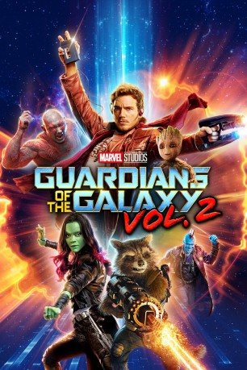

 
 IMDB-Wertung: 7.7 / 10
IMDB-Wertung: 7.7 / 10  Tomatometer: 84
Tomatometer: 84  Metascore:
Metascore: 
Gerade erst sind in Guardians of the Galaxy aus Feinden Freunde geworden und schon machen die fünf Verbündeten gemeinsam das All unsicher. Peter Quill, Gamora, Rocket Raccoon, Groot und Drax the Destroyer bereisen als Weltraum-Abenteurer diesmal nicht nur bereits bekannte Orte, sondern stoßen auch in neue Winkel der Galaxie vor. Nachdem die vergangenen Erlebnisse ihnen einige Rätsel aufgegeben haben, machen sie sich nun daran, diese zu lösen. ‘Star-Lord’ Peter Quill hat beispielsweise gerade entdeckt, dass er nicht rein menschlicher Herkunft ist, und - auch wenn er es noch nicht weiß - rückt ein Zusammentreffen mit seinem Vater nun in greifbare Nähe.
Jahr: 2017
Dauer: 135 Minuten
FSK:
Land: USA Studio: Walt Disney Studios Motion PicturesTonspuren: DTS - ,
Untertitel: Deutsch,
Auflösung: 1080p (1920x1080) Größe: 11161 MB
Genre: Action, Sci-Fi, Abenteuer
Regisseur: James Gunn
Drehbuch: James Gunn
Soundtrack:
Darsteller:
Datei: X:\Comic-Filme\Guardians of the Galaxy\Guardians of the Galaxy Vol. 2 (2017, FSK, 1920x1080) 3D.mkv seit 30.08.2017
Festplatte: Comicverfilmungen+MusikCD
 Es gibt insgesamt 8 Filme in der Gruppe 'Comic-Filme\Guardians of the Galaxy'
Es gibt insgesamt 8 Filme in der Gruppe 'Comic-Filme\Guardians of the Galaxy'